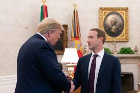

Donald Trump e Mark Zuckerberg si sono incontrati a sorpresa ieri nello Studio Ovale guardandosi come due estranei. “Scoop!”, ha strillato il giornalista Mike Allen sul sito di analisi politiche Axios. In effetti. Credo fosse il loro primo incontro ufficiale eppure in un certo senso si conoscono bene. Uno deve molto all’altro: per alcuni addirittura l’elezione alla Casa Bianca, ricordate Cambridge Analytica? Ecco, usava i dati personali degli elettori americani che Facebook ai tempi gestiva con molta leggerezza. E l’altro si aspetta molto dall’uno: in particolare la protezione dal “break up” delle grandi aziende tecnologiche che i candidati democratici, in testa Elizabeth Warren, agitano in campagna elettorale e che porterebbe, tra le altre cose, alla separazione di Facebook da Whatsapp e Instagram.
Nessun selfie, nessuna photo opportunity con il sorriso rivolto ai flash stavolta. L’unica foto che circola dell’incontro li ritrae mentre il Presidente, ripreso di tre quarti, gli dà energicamente la manona dicendo qualcosa. Magari solo welcome, benvenuto alla Casa Bianca. E il ragazzo, il più giovane miliardario della storia, lo guarda fisso con gli occhi sgranati. Spaesati, quasi. Forse a disagio per come si era dovuto vestire, giacca blu, cravatta bordò e camicia bianchissima, la divisa che mette quando lascia il campus di Menlo Park, dove invece gira solo in t-shirt.
Un incontro storico fra il capo della più grande potenza economica del mondo, e il capo delle piattaforme dove tre miliardi di persone comunicano e passano molto tempo delle loro giornate. Non si sa cosa si siano detti. Mark che di solito racconta tutto con grande enfasi sul suo profilo Facebook, stavolta non ha ancora detto nulla affidando a un portavoce il compito di dire che il meeting è stato “costruttivo”. E Trump, che scandisce il passare del tempo con tweet roboanti carichi di lettere maiuscole e punti esclamativi, ha postato la foto, quell’unica foto, scrivendo solo: “Nice meeting”, incontro gradevole, neanche un punto esclamativo.
Strana la vita, un paio di di anni fa Zuckerberg per molti era addirittura il candidato ideale dei democratici per battere Trump nel 2020: ci fecero anche un sondaggio che diceva che aveva ottime chances. Poi è venuta fuori quella storiaccia di Cambridge Analytica e il mondo si è capovolto. La Silicon Valley, che tre anni fa adorava Obama e detestava Trump, si è trovata nel mirino dei democratici e gradualmente si è riavvicinata al presidente americano: prima Tim Cook, poi Jack Dorsey, adesso Zuckerberg, hanno smesso di snobbarlo e sono saliti alla Casa Bianca. Ma tutti con quell’aria un po’ così, spaesata, spaventata, che aveva ieri Mark dopo i suoi incontri ufficiali di Washington dove uno gli aveva detto: perché non molla Whatsapp? E un altro lo aveva avvisato che della moneta di Facebook per ora non se ne parla.. Si parlerà invece molto di antitrust nei prossimi mesi.